Month 1
0 Week
How your pregnancy begins
Since there isn’t a baby yet!
Although this week is considered to be the first week of pregnancy, you actually had your period at the time.To calculate your due date, doctors take the first day of your last menstrual period (LMP) and add 280 days (40 weeks).
For example: the last menstrual day is January 1st, plus 9 months is October 1st, plus 1 week (7 days), it is October . So October 8th is the due date. The actual delivery time may occur within 2 weeks before and after the due date.
Pregnancy is calculated this way because even if you know the exact date you ovulated -and a lot of people don't - it's still difficult to be certain of the moment your baby was conceived.
During the first days of your period, many follicles start to prepare for ovulation. Only one,occasionally two, follicles will mature to release an egg. This egg will be released by the ovary and move into the uterine tubes to be fertilized.
At this time you may still be trying to conceive, don't be nervous, and relax, the baby may already be waiting for you! Because when you find you miss your period and find out you're pregnant, you'll probably be around four weeks pregnant!
Take folic acid in advance
Studies have shown that adequate folic acid supplementation in the first trimester and during pregnancy can reduce the birth rate of fetuses with neural tube defects and cleft lip. Experts also recommend that expectant mothers take folic acid in advance three months before pregnancy, and the recommended daily intake is 0.4 mg.Studies have shown that men taking folic acid can also increase the quality of sperm, reduce chromosomal defects and thus reduce the risk of neonatal down syndrome, so expectant fathers can also start taking folic acid.
1 Week
What happens at 1 week
Your period is finally gone.
The egg starts maturing at the beginning of each cycle so that it can be released during ovulation.If your cycle is a regular 28 days, the last day of this week should be the day of ovulation, and the ovulation period is five days before and four days after the ovulation day, plus the ovulation day for a total of 10 days.Getting pregnant relies on timing sex for when you're most fertile - this is probably in the three days before you ovulate and the day you actually ovulated. If you've got a regular 28-days cycle, chances are you ovulate on day 15.Some women buy an ovulation test to help them figure out when they might be most fertile.Obesity affects fertility
Obesity can cause infertility in women. It can also make fertility treatments less effective. Losing only 5 to 10 percent of your weight can improve your fertility.Health tips
Tracking your ovulation and taking care of your body leading up to your fertile period will increase the chances of conception near the end of week two. Honestly assess your dietary habits and determine what hinders or helps your efforts of having a healthy diet.If you smoke now is the time to quit. It is recommended that you give up drinking coffee or at least reduce the amount. Make sure you maintain your sleeping schedule as well. Avoid any alcohol and engage in yoga or any other mild physical activity.Pregnancy reminders
Be aware that the health of pregnancy depends largely on the quality of eggs and sperm.Frequent intercourse will not increase the chance of pregnancy, but intercourse every day or several times a day will reduce the density of sperm and affect the success rate of pregnancy.During pregnancy, expectant mothers and fathers should quit smoking and alcoholic beverages, and although expecting mothers are not yet pregnant, tobacco and alcohol will affect sperm quality and reduce the success rate of pregnancy!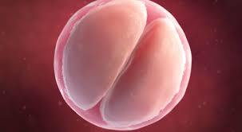
2 Week
What happens at 2 weeks
Beginning of your pregnancy!
During this week, the egg has been released from the follicle and is waiting for the sperm in the fallopian tube. The egg is fertilized within 24 hours after it is released, and sperm are most fertilized within 3 days of entering your body. Seize this opportunity for sperm and egg to meet, and you may have a baby.Chances of pregnancy are greatest between the first 3 days of ovulation and 24 hours after ovulation. once a day, or every other day, can improve your chances of getting pregnant.But don't stress too much when you are trying to conceive, too much stress will also affect the success rate of conception.Key signs and symptoms
If your little soon-to-be-embryo has already made it to his or her new home, you may see a bit of spotting as the fertilised egg burrows into the wall of your uterus. You may notice some feelings of queasiness- or nausea so bad it makes you puke.Rhesus negative blood
If your Rh blood factor is Rh-and your partner's blood factor is Rh+, your child may be at risk. Being rhesus negative is not a problem in your first pregnancy. But if you have more babies, you might need extra care. If you are rhesus negative but have a rhesus positive baby, the baby's blood can enter your bloodstream. The danger of that is that your immune system can develop antibodies against it that then attack the baby's red blood cells. In this case, you will have to take an injection of anti-D immunoglobulin and the baby will have to be monitored regularly during pregnancy.How to determine your ovulation day?
To determine your ovulation date, you can quickly determine the day of ovulation with Wocute Analytics, or you can purchase custom ovulation test strips. In general, the test begins 3 days before the day of ovulation, i.e. the 11th day before the next menstrual period. When line depth T is equal to or greater than line C, the result is judged as positive, and when line depth C is greater than line T, the result is judged as negative, if only line C appears, the result is judged as Negative, if only the T line appears, then the test is invalid and the test must be re-tested. This means that the deeper the T line than the C line, the stronger the degree of positivity. Once the test result is positive, it is best to repeat the test every few hours. At this time, the intensity of the positive will gradually increase, then begin to weaken, and when it begins to weaken, it can be predicted that ovulation will occur within 24 hours.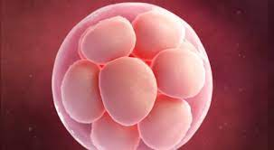
3 Week
Changes in the Baby
During this week, your baby is still a cell mass, which has rolled from the fallopian tube into the uterine cavity, and found a suitable endometrial to start implantation.When the blastocyst implants into the endometrium, it starts producing human chorionic gonadotropin (hCG).
HCG is the substance detected by pregnancy tests. It is also responsible for nausea and other pregnancy symptoms you may be experiencing. It stimulates the release of estrogen and progesterone, and the ovaries stop generating new eggs.
Changes in a Woman
But you may not have symptoms of early pregnancy, and your body shape has not changed.Nausea, lethargy,and fatigue have not appeared so soon.
At this phase, it is normal to experience no symptoms at all.
Key signs and symptoms
At this phase, it is normal to experience no symptoms at all. However nausea and vomiting are likely to happen in the fourth week or in the near future. You may experience mild cramping, which is a sign that the baby has properly implanted in the uterus. However, if there are any severe cramps or pain, you should see your doctor. Swelling of labia larger breasts, increased appetite and fatigue are also normal.
Reminder of the week
Take a test using the morning urine on the first day of the expected period. Your first call at week 4 of pregnancy should be to your doctor to schedule your first prenatal visit, where they will confirm your pregnancy with a urine or blood test.
What is hCG?
Human chorionic gonadotropin (hCG), a substance that can be detected during pregnancy tests. This substance can also cause nausea and other symptoms of pregnancy. They stimulate the secretion of estrogen and progesterone, which causes the ovaries to stop releasing new eggs.
Therefore, from this moment until the end of pregnancy, you will not have your period~
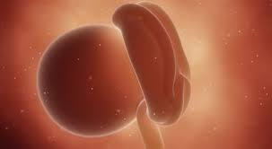
Months 2
4 Week
What happens at 4 weeks
Now the baby is the size of a poppy seed.
The baby's crown-rump length is about 2mm and the weight is less than 1g.
Changes in the Baby
At this point the embryo looks more like a tiny tadpole but it is already starting to form major organs.
Your baby is now actually going into the most important phase of its development:
Your baby's circulatory system has been initially established, and even the brain and nervous system have begun to develop!
Changes in a Woman
Have you felt some changes in your body recently?
You will most likely start feeling nauseous, aching breasts, cramps, frequent urination and fatigue, because
your baby is alreadly in your belly.
The symptoms you feel this week are just the beginning of the various changes your body is about to go through.
Key signs and symptoms
The symptoms you feel at these weeks are just the beginning of the various changes your body is about to go
through. You will most likely start feeling nauseous, aching breasts, cramps, frequent urination and fatigue.
It should be a priority to take care of yourself and get plenty of rest, have a balanced diet, do some light
exercise, and eat every few hours so your blood sugar doesn't drop so much that you lose even more of your already scarce energy.
Reminder of the week
Consider adding bananas to your diet: they contain high amounts of carbohydrates, dietary fibre, essential fatty acids, vitamin C,
vitamin B-complex, and minerals like magnesium, potassium, calcium, iron. All these nutrients help in the healthy development of the
baby in the womb. They are also helpful in relieving some side effects of pregnancy.
Nutrition Tips
It is generally recommended that expecting mothers take 0.4 mg of folic acid per day until the third month of pregnancy.
If you have problems metabolizing folic acid, you should ask your doctor if you need to supplement with folic acid.
Foods such as quinoa, dried soybeans or beans, animal liver, lean meat and other foods rich in folic acid, but due to
factors such as cooking methods, it is difficult to ensure folic acid in nutritional activity. But of course, eating some is better than none~
Suggestion: don't smoke during pregnancy
Smoking during pregnancy can increase the risk of stillbirth, premature birth, low birth weight fetuses, and sudden newborn death syndrome after birth. Expectant fathers and expectant mothers should also quit smoking once and for all. At the same time, they should also stay away from other smoky smokers, formaldehyde (a colourless, strong-smelling, flammable chemical that is industrially produced and used in building materials such as pressed wood, plywood and other products), radiation, and other embryo growth factors.
Prenatal check up reminders
Did you have a period? Is it time to do a pregnancy test? If you see two strips on a pregnancy test, congratulations! If you want more confirmation, you can go to the hospital for a blood test to determine if you are pregnant!When you are around the sixth week of pregnancy, you still need to go to the hospital for a B ultrasound. This is because pregnancy tests determine that you are pregnant by detecting the HCG content in your urine, but this is not certain as the position of the fetus now determines its 'home' only with a B ultrasound can we determine if it was implanted in the uterine cavity, rather than lost in the fallopian tubes and elsewhere, becoming an ectopic pregnancy.
In addition, the number of fetuses can also be determined by ultrasound B. At this time, it can be determined whether the mother is pregnant with more than one fetus.
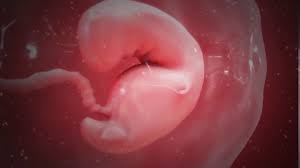
5 Week
What happens at 5 weeks
Now the baby is the size of a apple seed.
The baby's crown-rump length is about 2.6mm to 6mm and the weight is less than 1g.
Changes in the Baby
Your baby is no longer a cell mass, it has "transformed" into a fetal bud, and also has a prototype as a small human being, it has a big head and a small curved body now.However, the baby's hands and feet are still protruding like granulation, not formed, and a small tail is dragging behind it, like a cute "little seahorse".
Your baby is changing and growing rapidly, and many structures are starting to take shape.
The placenta, amniotic sac, and umbilical cord are still forming. For now your baby is surrounded by the gestational and yolk sacs, which provide protection and nutrients.
Your baby's heart begins to form. Before the heart is fully formed, there are already two channels that start to beat. Over the next few weeks, these channels will merge to form a fully functioning heart.
Changes in a Woman
From this week on, your "pregnant" feeling will feel more real, as early pregnancy symptoms like morning sickness and lethargy become apparent. Great mood changes and irritability are mainly caused by hormone changes in your body, don't worry too much and persist until the second trimester, these symptoms will gradually ease.
Key signs and symptoms
You are probably finding yourself developing a bit of a split personality due to the constant mood swings. However what you're experiencing right now is caused by hormones and is absolutely normal. At this phase many women experience abdominal pains which shouldn't be a cause for concern, unless they're really intense. It is important to not take any painkillers without seeing your doctor first!
Sex during pregnancy
If you're wondering whether it's safe to have sex during your pregnancy, then the answer is yes. The baby is protected by your abdomen and the uterus' muscular walls, therefore penetration and intercourse's movement will not harm it in any way. Your baby is also cushioned by the amniotic sac's fluid,which is impermeable to sperm and bacteria.
Nutrition Tips
insist on taking folic acid, you can also take prenatal vitamins, and it is best to consult your doctor about the dosage to be taken.
In addition, pregnant women should pay more attention to a balanced diet, a variety of food, a healthy diet rather than a large amount, and to avoid some substances harmful to the fetus. Otherwise, if you simply increase your food intake, it will easily lead to obesity during pregnancy, which is not good for your health and the health of your baby.
Pregnancy reminders
Because from the fourth to the sixth week of pregnancy, pregnant women are exposed to a very hot environment, and the increase in body temperature will affect the normal development of the fetus.
So remember not to make the water temperature too high when you shower, it can be controlled at about 38 degrees Celsius, and at the same time, try to choose a quick shower, and avoid staying in hot water for a long time.
Prenatal check up reminders
If you notice some bleeding, don't panic, it's usually small bleeding, and it could be spotting.
However, you should also pay attention to the occurrence of a threat of miscarriage, if there is a lot of bleeding, it is recommended to seek medical attention in time to determine the cause of the bleeding.
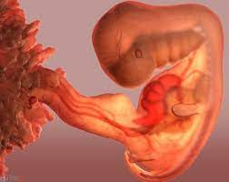
6 Week
Now the baby is the size of a green pea.
The baby's crown-rump length is about 6mm to 12mm and the weight is less than 1g.
Changes in the Baby
And this week, your baby is starting to grow faster, and it will triple in size again!Your baby's facial features are also formed during this week, such as the optic vesicles that develop into the eyes and the channels that develop into the inner ear.
Your baby's heart tube begins to beat, which is the most primitive "heartbeat" of the baby. Its limbs begin to move, looking like paddling paddles. A layer of transparent skin has covered your baby's body.
Six-week-old embryos still have tails, which is normal during development. The tail will disappear when the baby is born.
Changes in a Woman
You're probably experiencing fatigue besides nausea tormenting you. Take it easy! If you feel sleepy, it's a good idea to rest for more than ten minutes.
Your bump might still be unnoticeable, but the embryo is growing at the fastest rate it ever will. You can observe the changes in your belly!
Key signs and symptoms
You're probably experiencing fatigue, tender breasts, and some serious nausea - nothing new. Because of the pregnancy hormones: HCG, estrogen and progesterone, you will have some crazy cravings, which are probably signs of what your baby needs. It's okay to indulge as often as possible, but make sure you're going for the healthy options when you can.
What about your belly?
Every pregnant woman is different, but your belly usually starts being visible in the middle of the second trimester, when the uterus out grows the pelvis. You may notice your belly getting a bit bigger but your clothes will still fit for some time.
Nutrition Tips
Although eating fish is generally beneficial because it contains protein and omega-3, but a pregnant woman should reduce eating fish, especially in the first months of pregnancy, because it contains a high percentage of mercury, which greatly affects the development of the nervous system of the fetus.
Pregnancy reminders
Have you recently felt that your breasts are always swollen? Your breasts are preparing for secondary growth under the influence of hormones, which is a normal phenomenon. In order to adapt to this change, you can buy a maternity bra to wear.
Prenatal check up reminders
This week you can take your first official pregnancy test, and if you don't have time, don't go beyond 13 weeks of pregnancy at the latest without the test.
First pregnancy check up includes consultation, measurement of height, weight, blood pressure, urine test, blood test, B ultrasound scan, etc.
Some tests must be booked in advance, do not go early!
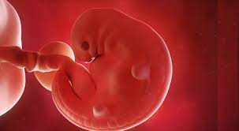
7 Week
What happens at 7 weeks
Now the baby is the size of a blueberry.
The baby's crown-rump length is about 12mm to 17mm and the weight is about 1g to 1.2g.
Changes in the Baby
Fingers and toes start to stick out of the tiny arms and legs -for the time being, they will be glued together with a membrane, and like the webbing of a duckling. It'll take a few weeks for the webbing to disappear.Your baby's most important energy supply hub, the umbilical cord, is also clearly visible.
Your baby's brain structure is more complex and its face becomes clearer, and its facial features can be roughly distinguished.
Changes in a Woman
You may also suffer from nausea, frequent urination, lethargy, heartburn and other early pregnancy reactions. Hormone changes will also make you emotionally unstable. These are all normal. After the first trimester, you will feel better.
Your uterus is growing quietly, but the bulge of your belly is not yet obvious. The clothes you were wearing before may be a little tight, and the maternity clothes can be prepared.
Visible symptoms of pregnancy
It is not a round belly, contrary to popular belief. At first, the breasts augment visibly - they become fuller and more tender. Supply yourself with a comfy bra which will not inflict any pressure on them. Think about some low effort sports. Walks and dancing are just perfect. Remember that your baby already has a labyrinth, so it is affected by the movements of your body.
How much weight will you gain during pregnancy?
During the first trimester, you should gain no more than 2-3 kilos. Over the course of the second trimester, which is the time of intense growth and development of your baby, you can gain even up to 6 extra kilos. The last trimester means another 4 kilos. Of course, this may vary depending on the person and they are affected by your initial weight as well as your style of life.
Nutrition Tips
Even if "drowsiness" is chasing you at the moment, it is not recommended to refresh yourself with a cup of coffee, because caffeine is not a good thing for children!
However, it is not absolutely impossible to drink it at all. If drowsiness is affecting your work and life, you can drink it if necessary, just control the amount. Make sure the daily amount of caffeine does not exceed 200 mg, as the amount of disposable paper cups, non-espresso coffee, and one cup a day is not a problem.
In addition, caffeine is not only found in coffee, it is also found in tea, cola, chocolate, etc., it also contains caffeine, so pregnant women should pay more attention.
Pregnancy reminders
Due to hormonal changes and other reasons, pregnant women may experience symptoms of heartburn after meals or between meals.
At this time, it is not recommended to take medication to relieve the condition, and it can be alleviated by eating small and frequent meals.
Prenatal check up reminders
Compared to last week, fetuses have doubled in size. At this time, the length of the fetus is about one centimeter.
Doctors begin by measuring the baby's size, a measurement sometimes called "upper rump" length because it measures the length from the top of the fetus's head to the bottom of the buttocks
If you have a medical exam this week, you can listen to the baby's heartbeat.
During the ultrasound, fetal tissue can also be seen in the blastocyst, and if you can hear the fetal heartbeat, this means that the fetus is currently in a normal condition. In addition, under ultrasound examination, the yolk sac, which is needed to nourish the fetus up to 12 weeks, can also be seen.
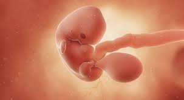
Month 3
8 Week
What happens at 8 weeks
Now the baby is the size of a pomegranate seed.
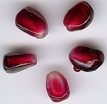The baby's crown-rump length is about 18mm to 24mm and the weight is about 1.3g to 2.3g.
Changes in the Baby
During this week, your baby finally has a "human shape". It can be seen that it is a mini baby now, not the "little seahorse" of the previous weeks, and many important organs of your baby's body have also been formed.
If you were to look closer at the embryo at this stage, you'd notice the head beginning to uncurl a little. You'd also see that the arms are longer than the legs.This can make the embryo look a little uneven, but it's just because the upper body develops faster than the lower body.
Changes in a Woman
You will most likely start feeling frequent urination, and it is normal. Because your body is producing more blood to conceive a baby, more blood needs to flow through the kidneys, and with the gradual increase in the uterus and pressure on the bladder, frequent urination is inevitable.
Now you can feel your body shape has changed and your waistline has increased. Occasionally you may find that your belly is a little tight, and it even hurts. This may be caused by the rapid expansion of the uterus. Don't worry too much.
Health tips: mood swings
You must have noticed that one day you boost with energy and the other you are nervous and everything makes you angry. Take it easy! The mood swings should stop after the tenth week of pregnancy. There are upsides to it as well. An extreme level of HCG hormone makes your skin, hair and nails be much healthier and more beautiful.
Do you have special privileges as a Mom?
Of course you do! Remember that you are a true mom already and you need to take special care of yourself and your baby. The nausea and hypersensitivity may be an obstacle to normal functioning. You have every right to the benefits aimed at moms.
Nutrition Tips
Avoid raw food during pregnancy. Meat should be thoroughly cooked, as undercooked meat may contain listeriosis, toxoplasma, E. coli, norovirus and other "bad things" that can affect the health of the fetus.
In addition, it is also better to eat less raw or semi-boiled eggs and their products, raw eggs may be contaminated with salmonella, causing vomiting and diarrhea in pregnant women.
Pregnancy reminders
If, in addition to the increased frequency of urination, there is a burning sensation and pain when urinating, it is best to see a doctor for problems such as urinary tract infections.
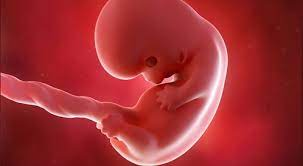
9 Week
Now the baby is the size of a cherry.

The baby's crown-rump length is about 25mm to 31mm and the weight is about 2.6g to 4.5g.
Changes in the Baby
During this week, your baby's placenta has officially started to work, and the "webs" between the fingers and toes have disappeared and become distinct.
Your baby is developing more defined facial features, including a nose. Inside the mouth, the teeth and taste buds are also beginning to take shape. The eyelids are becoming more prominent, and the eyes are able to move around in their sockets. Ears are also more distinct and moving into place, although your baby can't hear anything yet.
Simultaneously, skeletons and organs made of cartilage are developing.
Your baby's limbs develop rapidly, joints appear, and the movement is quite free now.
If you have an ultrasound, you might be surprised to see that your baby is moving around. You probably won't be able to feel these movements until later on in your pregnancy. During the first pregnancy, most pregnant moms start feeling the baby's movements around 18-20 weeks.
Changes in a Woman
Your breasts are now starting to develop a second time, in preparation for the "milk" after the baby is born. Your breasts will become larger, and the color of the nipples and areolas will deepen.
From this week, you will find nausea, lethargy and other early pregnancy reactions are slowly diminishing.
Health tips: empathy
Despite the fact that the most risky period of your pregnancy is behind you, be careful. You should not take any medicine without consulting a doctor. Avoid the RTG radiation. Rest a lot and don’t overwork yourself. Remember that in this phase of pregnancy, the baby can emphasise with you. All your emotions and sensations affect the little one.
Connect with your baby
It's not too early to start connecting with your baby! Just after waking up and/or before going to sleep, sit quietly and gently rest your hands on your belly. Focus on your breathing and start thinking about your baby (your hopes and dreams, your intentions as a parent, etc.). It's a great way to focus on the miracle unfolding inside you and to plan for the kind of parent you want to be.
Nutrition Tips
Have you started thinking about adding some "advanced" nutritional products lately? Nutrients are neither high nor low. If you want to supplement the nutrients, you should choose supplements instead of eating healthy products. It is best to consult a doctor for health products and supplements as per your specific condition.
Pregnancy Reminders
The fetus's genitals begin to develop this week. Genetically, the sex of the fetus has been determined, but the fetus has not yet developed to the extent that it can be determined by ultrasound.
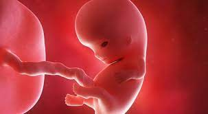
10 Week
What happens at 10 weeks
Now the baby is the size of a olive.
The baby's crown-rump length is about 33mm to 43mm and the weight is about 5g to 8g.
Changes in the Baby
At this stage, the embryo has become a fetus, and the fetus can swallow the amniotic fluid and move its limbs. The fetus looks like a baby now.
During this week, your baby's fingers and toes have been completely separated and formed. Your baby's bones have also begun to form, the eyelids continue to grow, and can cover the small eyes. The outer ear is in the final stage of formation. The small buds that will become teeth later also came out. Your baby's bones and muscles become stronger.
Changes in a Woman
Do you feel like you are rejuvenated now? Unbearable nausea, vomiting and other early pregnancy symptoms are slowly disappearing. You are now a lively pregnant mom. However, you may still suffer from symptoms such as heartburn, frequent urination, and constipation, which is also normal.
Pregnancy food safety
Avoid any food that could harbour bacteria or parasites that could make you sick or harm your baby. That includes raw or undercooked meat, poultry, and fish; runny, undercooked or raw eggs and unpasteurized soft cheese. Don't eat refrigerated meats and spreads unless they have been heated until steaming hot. Avoid any buffet or picnic food that's been sitting out for more than two hours, and any fruits or veggies that haven't been washed.
Buy new underwear
It's probably time to upgrade your underwear. As your breasts and waistline grow and change, maternity bras and underwear can keep you comfortable. It's wise to shop for a maternity bra in an actual store, not online, so a sales associate can help you with sizing. Look For good support and room to expand. Your breasts might increase one or two more sizes over the coming months, especially if this is your first pregnancy.
Nutrition Tips
If the mother likes to drink tea, it should be noted that tea also contains caffeine, but it should not be drunk as good and harmless drinks.
Pregnancy Reminders
If you have a cat at home, you should go to the veterinary hospital to check if it has toxoplasmosis. Cats are hosts to Toxoplasma. Toxoplasmosis infection during pregnancy can lead to serious consequences such as miscarriage.
The cat is also your "baby baby", so don't give it up easily, but put it in a safe place! Healthy cats can also accompany pregnant women during pregnancy.
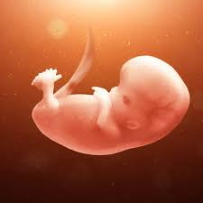
11 Week
Now the baby is the size of a fig.
The baby's crown-rump length is about 45mm to 60mm and the weight is about 9g to 16g.
Changes in the Baby
From this week onwards, the baby can officially be called "fetus"! All organs have taken shape and growth has become very rapid.
Your baby's facial bones, mouth, palate and tongue are now fully formed.
Tooth buds are growing and separating into adult teeth and baby teeth, with 10 baby teeth on top and bottom.
The inner ear and the ear canal on the side of the head are developing, but it will take a while for your baby to hear.
Your baby's eyelids are still closed and won't open for the next few months.
The genitals also begin to grow, and it will soon be possible to distinguish whether it is a boy or a girl.
Changes in a Woman
You start to get some nasty hyperpigmentation on your body, like pregnancy spots on your face, pregnancy lines in the middle of your belly, and even your nipples and areolas have darkened a lot. It's irritating! But don't worry, these colors will fade away after the baby is born.
Health tips: dealing with dizziness
Hormone shifts and blood pressure changes could cause dizzy spells around pregnancy week12. You can help prevent dizziness by snacking regularly and drinking plenty of water. Sit or lie down if you're feeling dizzy or lightheaded and let your doc know about any severe bouts.
Nutrition Tips
Pregnant women should take care to drink water every day, and it is better to drink more than 8 glasses of water every day, and there is no specific time to rink water, and a small amount of water can be drunk every time, such as a cup in the morning and a small amount of water can be drunk every time, such as a cup in the morning and evening, the other times are distributed equally, every time About 200ml.
Pregnancy Reminders
During pregnancy, pregnant women's moods change unexpectedly due to hormones, as does pregnancy depression.
Pregnancy depression is an emotional disorder that manifests as prolonged sadness, loss, anger, or daily frustration in pregnant women, as well as inexplicable tears and tantrums after pregnancy.
All of these things are caused by hormonal changes during pregnancy. Pregnant women should be given enough time to adapt and maintain a good mood.
Your mood will also affect your child's health.
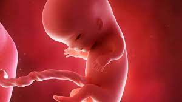